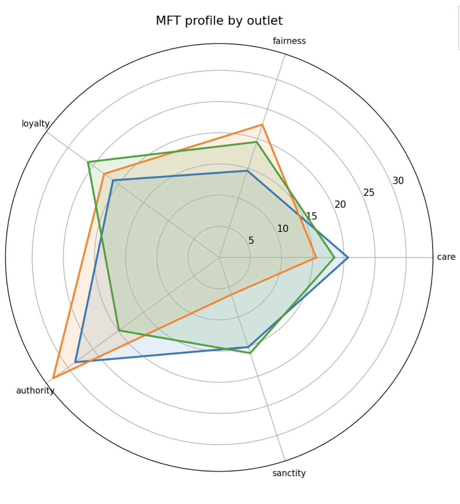

Detectaives
Collaborative web experience focused on interactive data exploration and storytelling. Built with an emphasis on usability and visual clarity to surface insights to a general audience.
I'm a Data Analyst and Front-End Developer, focused on using data to create meaningful solutions. In addition to analyzing complex datasets and building intuitive web applications, I'm also deeply engaged in research, exploring ways that technology can improve lives and inform decision-making. Here, you can explore my projects and see how I use data and technology to solve real-world problems.
Production sites and public-facing work I've built or maintained
Collaborative web experience focused on interactive data exploration and storytelling. Built with an emphasis on usability and visual clarity to surface insights to a general audience.

As a front-end developer and researcher at THAT Lab, I enhanced the website to better showcase our work in human-computer interaction. This project highlights my skills in web development, accessibility, and user-centered design.

This page was designed in Figma and built responsively to showcase projects and research. Focused on clarity, accessibility, and ease of navigation.
Analysis, models, and demos & experiments and research prototypes
The first iOS app for voice-typing in Tigrinya, pairing a system-wide Ge'ez keyboard with English ↔ Tigrinya translation and Tiglish script conversion. Built around an in-house speech-to-text model fine-tuned on Meta AI's Wav2Vec2-BERT 2.0. Read the overview (PDF)

Built a Python NLP pipeline to preprocess multi-source JSONL corpora, encode sentences with SBERT, and compute similarity-based scores against curated exemplar embeddings. Aggregated sentence-level results into outlet comparisons, CSV outputs, and visualizations.

Analyzed the IMDb dataset to explore how movie ratings, metascores, and gross earnings relate, using scatterplots and Pearson correlation. Built regression models and ran hypothesis testing to compare metascores across genres.

Analyzed engagement metrics like reactions, comments, and shares on Fox News social media posts to uncover patterns in audience behavior. Used visualizations and hypothesis testing, including a Z-test, to measure shifts in audience sentiment around controversial topics.
ACM Conference on Human Factors in Computing Systems (CHI), 2026
Paper: Interrogating the "Us" Versus "Them" Dichotomy in Technology Research with Older Adults
University of Maryland College of Information, 2023 to 2024
Recognized for academic peer mentorship and student leadership
University of Maryland Do Good Institute, 2026
Recognized for sustained community impact and leadership initiatives
Human-Computer Interaction Lab, University of Maryland, 2026
Panelist for DetectAIves: Intergenerational Learning with Community Members about AI, discussing curriculum design and community-centered AI literacy workshops
Artificial Intelligence Interdisciplinary Institute at Maryland (AIM), University of Maryland, 2026
Research poster presentation on winter AI literacy workshops and community engagement
BCAUSEICAN / University of Maryland, 2025
Presentation on intergenerational AI literacy and public facing workshop design
Community Advocates for Family and Youth, 2025
Presentation on community service trends, referrals, and outreach analysis
Knollwood Retirement Community, 2025
Led AI literacy workshops for older adults focused on accessible technology education